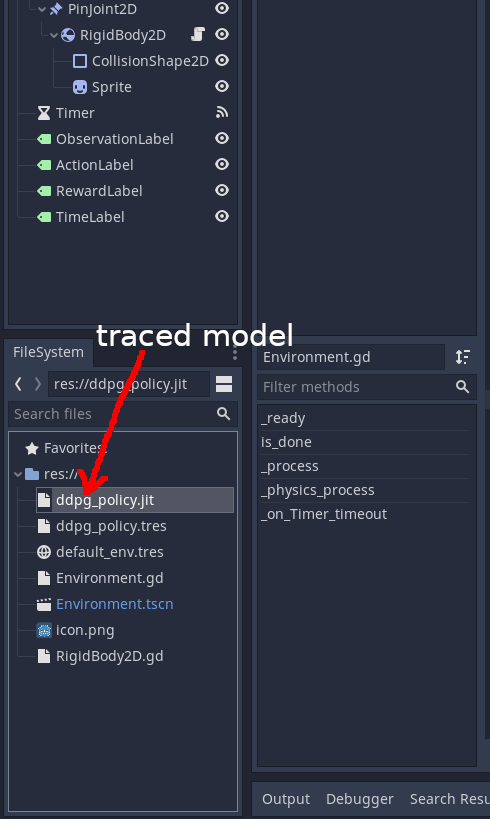
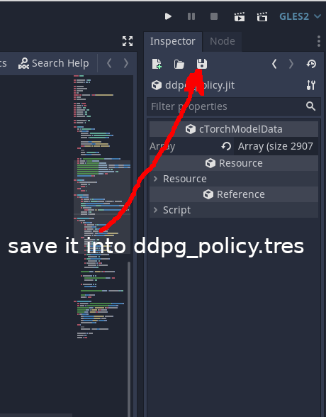

Deployment tutorial
Tracing the model
During the test phase, we have no need for the critic network. We only need to convert policy model to jit. This is extremely simple task, Code1 basically shows how to do this. If you have more complicated model that contain non-torch operations, like python if-statements, there's a great tutorial.Code 1: Tracing the policy model (test.py).
num_states = env.observation_space.shape[0]
num_actions = env.action_space.shape[0]
policy = Actor(num_states, num_actions)
policy.load_state_dict(torch.load('./policy.pkl'))
state = env.reset()
state = state.to(dtype=torch.float32)
traced_policy = torch.jit.trace(policy, state)
traced_policy.save('ddpg_policy.jit')
Figure 1: Loading jit model
Figure 2: Saving resource
Using the model from Godot
First copy the file containing your traced model(ddpg_policy.jit in our case) to your project. By double clicking it (Figure1) the resource loader cTorchModelLoader will convert this file into resource cTorchModelData. Then save this resource into ddpg_policy.tres(Figure2). It basically stores the entire file into PoolByteArray. We need this to during the export of the project, because in this case Godot takes care of appending the file to the final binary or putting it into pck.Now we can use Code2 to load and run the model. Notice, that we multiply the policy output by 8.0, because during the training we normalized our environment and this normalization coefficient did not appear in the policy model during the tracing.
Code 2: DDPG training cycle (main.py)
onready var policy_data = load("res://ddpg_policy.tres")
var policy
var policy_action
func _ready():
if mem.exists():
...
else:
policy = cTorchModel.new()
policy.set_data(policy_data)
...
func _physics_process(delta):
if timeout:
if mem.exists():
...
else:
if policy_action != null:
agent_action = policy_action
agent_action[0]*=8.0
func _on_Timer_timeout():
...
if mem.exists():
...
else:
policy_action = policy.run(observation)